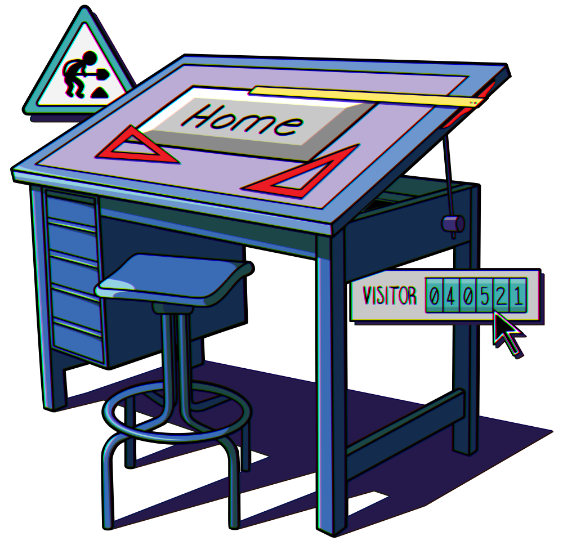

Subscribe to the podcast to receive new episodes as soon as we release them

Looking at the internet in 1995 is like looking back at awkward grade school yearbooks—all the weirdness and flaws stand out in stark contrast to what it’s grown into since. And web design took awhile to become a career—but it got a big boost in 1995. When the Batman Forever website launched to promote the movie, it showed people what was possible on the web. And it forever changed what we’d expect from a website.
Jay Hoffmann describes the quirky designs of the early web. Richard Vijgen explains how we went from a lack of conventions to a homogenized web. Jeffrey Zeldman recounts building the Batman Forever movie’s website—and sowing the seeds of professional web design. Jessica Helfand outlines the process and joys of designing a web page. And Kyle Drake shares how he founded Neocities in an attempt to recreate some of that magic of the early web.
00:04 - Saron Yitbarek
Y’know, of all the Batman movies ever made, 1995's Batman Forever, yeah, it's not at the top of a lot of lists. It was campy with strangely muscled outfits, and overblown acting. But it did boast one superb element. The website for Batman Forever was a breakthrough. The first standalone site ever made for a movie. When people visited they found full-screen backgrounds, videos you could download, message boards where fans could chat. It was a whole new arena of digital marketing. And it was a harbinger of things to come. All of a sudden the world wide web was opening up to whole new levels of design.
00:56 - Saron Yitbarek
Batman Forever's website launched on May 25th, 1995. We've been talking all season about how that year propelled us into a new future, because 1995 was the year the web took on a life of its own. And that new life was looking good because the internet after 1995, was one where design, user experience, suddenly mattered like never before. The look and feel of a webpage would determine success. And that inspired a lot of innovation, because a new army of web designers were asking, "What should a website even look like?" The answer, at first, was it could look like anything. I'm Saron Yitbarek and this is Command Line Heroes, an original podcast from Red Hat.
1:49 - Saron Yitbarek
I wanted to know, how did that rush of 1990s web design change our online world? It was a period of extreme change for designers. And, looking back at that period today, the work can look a little weird, sometimes even cringeworthy, but that's because a foundational shift was underway.
02:12 - Saron Yitbarek
Before web designer was a bonafide profession, there was a lot of amateur action going on. If you're old enough, you might remember cobbled together websites from the mid '90s full of obnoxious banners, proudly positioned site counters, and scrolling neon text in all caps. Like I said, it was a weird time for web design. But nowhere was this weirdness flourishing more than at a little web hosting company called GeoCities.
02:45 - Jay Hoffmann
It was started by David Bohnett and John Rezner. And they both, basically, just wanted to create a way for people to just host any website, really.
02:55 - Saron Yitbarek
Jay Hoffmann is a developer at Reaktiv Studios, and he's been running a website called The History of The Web for the last few years. He says those GeoCities founders picked up on the fact that the web was going to be a place where user participation rules.
03:13 - Jay Hoffmann
The strength of the web was its ability to bring users of a website into the process itself. And there was a real belief that moving forward, the web was going to be a participatory medium. So, in other words, everybody was going to have a website, and everybody was going to have kind of a home base on the web, and that's what we would use to communicate to each other.
03:33 - Saron Yitbarek
Bohnett and Rezner built GeoCities so users could easily manage their own homepage for free.
04:20 - Saron Yitbarek
Users were like pioneers, citizens of a brand new country. They called themselves "netizens" and they were learning to imagine the world wide web as a territory they could inhabit.
04:33 - Jay Hoffmann
The web is this big community, it's this big space. And what you need to do is just find your place in it. And I think that was extremely powerful and it caught on very quickly.
04:43 - Saron Yitbarek
Those home bases needed to be decorated. They needed to be personalized. Once the idea had been formed that you owned a piece of the web, users were inspired to invent ways to show off a bit.
04:58 - Jay Hoffmann
I think what you would see is a lot of people experimenting with the medium. You would learn a little bit of HTML. You would come to a site and it would be this big, bold background that was green, or purple, or gold. And text on that that was maybe barely readable against it, but big, and there were some elementary tags that let you scroll text, so you would often see a little bit of scrolling text, maybe a random spot.
05:27 - Saron Yitbarek
Imagine a teenager who got to design their own bedroom. It's not going to be the lobby of the Ritz. In our teenage bedrooms, we took an early stab at establishing an aesthetic of our own. And that's exactly what was happening at GeoCities in 1995.
05:44 - Jay Hoffmann
It was being done by people that were younger, so they had kind of a different aesthetic. But it was also by people that were maybe a little bit on the outside of the mainstream, and willing to take a chance on some things. So you saw some really, really interesting experiments come out of 1995.
06:06 - Saron Yitbarek
One of those chance-takers was Richard Vijgen, an artist, who was also an avid citizen of GeoCities.
06:16 - Richard Vijgen
There weren't any rules, so there weren't any conventions about what a homepage should be, or what it should look like, or what kind of language you should use, or how you should use images, or sounds, or videos. It was basically an evolutionary process where people would look at one another's websites and think like, "Hey, that's a good idea. I might use this MIDI sound, or this repeating background, or this RealPlayer video."" And I think it was really a sort of collaborative process of people trying to figure out how to use the medium.
06:53 - Saron Yitbarek
Collaborative and democratic. Amateurs were pushing the medium forward with an openness that would later seem impossible, because a commercialized and professionalized web was just around the corner.
07:08 - Saron Yitbarek
In 1999, Yahoo purchased GeoCities. Then, in 2009, Yahoo shut it down. The decision upset a lot of those early netizens. More than a decade of experimental web design disappeared overnight. If we're sticking with that teenage bedroom metaphor, this is the moment you come home from college and realize your bedroom's been turned into an office. And yet, not all was lost. Vijgen had heard there was a backup of GeoCities, a kind of digital heritage effort in the form of a huge file on BitTorrent, about 700 gigabytes of data.
07:51 - Richard Vijgen
And I thought to myself, "Here's a paradox because I think it's very important that they made this backup. And, at the same time, it's almost impossible to use it, and to show it to someone, and convince them of the cultural value of early '90s internet and GeoCities, because this format was so closed, so hermetic.
08:19 - Saron Yitbarek
Vijgen, whose art focuses on data visualization, began working to translate that file into a piece of digital culture that anyone could interact with. He called his creation, The Deleted City, a digital ghost town that anyone could wander. A testament to the earliest days of amateur web design.
08:39 - Richard Vijgen
I wanted to share the enthusiasm that I had for this early online culture, because this was a time when web 2.0 platforms like Facebook and Twitter were really taking over the classical notion of the web. And I felt that they really portrayed what the internet could be in a very different way than the sort of first-generation internet that I came to love.
09:13 - Saron Yitbarek
That web 2.0 was a web where design choices were made for you. A web where social media platforms handled all the code on your behalf. And everybody's corner of the internet looked a lot like everybody else's. Here's Jay Hoffmann again.
09:31 - Jay Hoffman
When GeoCities closed, the web was already beginning to turn. It was becoming something that was a little more mainstream. It was becoming a place of business rather than a place of, let's say, personal exploration.
09:45 - Saron Yitbarek
It was the rise of the dot-coms and, potentially, the fall of the weird. But the days of exploration weren't over yet, because even as the amateur paradise of GeoCities became a ghost town, a whole new culture of professional web design was emerging.
10:12 - Saron Yitbarek
I mentioned the Batman Forever website at the top of this episode, the 1995 creation that signaled the beginning of professional web design. But just how big a change was it?
10:25 - Jeffrey Zeldman
We locked ourselves in our offices, and wouldn't talk to anybody. And, basically, just did a 3-month "war room" until we came out with a web design.
10:34 - Saron Yitbarek
That's designer Jeffrey Zeldman who, along with Alec Pollak and Steve McCarron, built the Batman Forever website. Thing was, like every other designer at the time, they had essentially no clue what they were doing. The job was still being invented.
10:51 - Jeffrey Zeldman
Our agency president went down the hall and asked Alec Pollak and me, "Can you guys make websites?"" And we lied and said, "Of course." And we had no idea.
11:06 - Saron Yitbarek
They imagined, for starters, a little drama. What if the Batman logo flew toward the screen? Only problem, Flash wouldn't be invented for 3 more years. Zeldman explains how art director McCarron used the graphics capabilities of Netscape 1.1 to make it work. And, quick disclaimer, the way he pronounces things in this next clip does not reflect this podcast's position on the GIF versus GIF debate. But to each their own.
11:37 - Jeffrey Zeldman
So he took an image of the bat logo, and he shrank it by 20% and saved it as a GIF. And then he shrank it by 20% and saved it as a GIF. And he shrank that by 20%, and saved it as a GIF. He kept going. So, basically, what he had made was the equivalent of just the series of the bat logo getting smaller. Then, he sequenced it so that it looked like the bat logo was getting bigger. There was a language called PEARL that was a back-end language that you could use to control the timing of events on the web. So, the effect was that the bat logo came at you out of the dark and was animated.
12:17 - Saron Yitbarek
They were, basically, stapling and duct taping this website together, making it up as they went along. The result was more immersive, and more fun than any website that 1990s audiences had ever seen.
12:32 - Jeffrey Zeldman
We, basically, made a movie theater that looked like something from a Batman comic, and all these buildings. And we stacked them next to each other and we had, what was called an “image map,’’ which is where you make a giant picture. And then, you mark these areas and say, this is a live link, this little area. So, if anyone clicks anywhere near this part of the picture that represents Gotham Cinema, they'll be taken to the Gotham Cinema page. And if anyone clicks near the Gotham Library building, they'll be taken there. Basically, a clickable version of the city for the front page.
13:10 - Saron Yitbarek
Did they bother to include the movie's title on that home page? Nah. It was weird and wonderful. Zeldman told us there were about a million people using the web at that time and half of them visited their website.
13:27 - Jeffrey Zeldman
Joel Schumacher said it was better than the movie. There was nothing else like it. And there still isn't. When people go, "Oh, look at these old websites," and they laugh and show GeoCities or something, I'm like, we were doing something much more aesthetically refined and excellent.
13:44 - Saron Yitbarek
Zeldman and his team delivered a test case that inspired others. Internet Explorer and Adobe Flash and CSS all arrived soon after. And a new world of web design was unleashed, where professional designers could flex their muscles. Meanwhile, every company now needed a website of their very own. Something else was happening, too. As companies began demanding their own websites, they also started demanding predictable results. All those clicks, and little signals of user behavior were starting to add up to a culture where the "Wild West" could be replaced by reams of hard data. There was a push toward best practices. And clients wanted their websites to look and feel like every other website. Soon the experimentation of something, like the Batman Forever site, became a liability.
14:41 - Jeffrey Zeldman
We were making something cool and underground, and it assumed you were an early web adopter. You had the patience to sit through an animation, and find out what the website was about. Your friend told you it was cool, you'd sit there while the animation loaded. Wouldn't make that assumption today. Today, people are looking for information. Today's web is much more transactional. It's much more about "I need to do, I need to see, I need to learn."
15:06 - Saron Yitbarek
Even while we mourn the loss of those less rule-bound early days, we should remember that making things easy to navigate is really about accessibility. The original Batman Forever site assumed you'd get the browser it needed, Netscape 1.1. And it made all kinds of assumptions about language, literacy, and education too.
15:28 - Jeffrey Zeldman
Now, we would try to be inclusive from the get-go and we would test, and I would use language that was clear instead of clever. I wouldn't make navigation based on a metaphor like a city. I'd have navigation that would say "Download Video Files," because nobody has time. We've lost some charm and wonder. But we've gained tremendously in usability.
15:51 - Saron Yitbarek
New rules were being written. And, a decade or so later, we would have less patience for the experiments of 1995. But we can't underestimate how much change took place before that new rule-bound reality emerged. As web design became a bonafide respectable field, it remade the larger world of design in its own image.
16:21 - Jessica Helfand
I remember standing by a fax machine, and drawing on 8 ½ by 11 paper, drawing what I thought the screen should look like and faxing sketches to clients.
16:32 - Saron Yitbarek
Jessica Helfand is a designer and one of the founders of the Design Observer site. She lived through that moment of transformation when the web arrived and her industry changed forever. Today, it's obvious to us that web design is just as valuable as the design of a printed magazine. But Helfand remembers a hybrid moment when designers were still learning how to translate their skills, and their attention, onto digital screens.
17:00 - Jessica Helfand
I actually always drew on tracing paper, which is very forgiving, and fun, and kinetic. So, I make these tissue sketches, rolls of tissue like architects use, and I would send these tissue sketches to clients.
17:16 - Saron Yitbarek
When Helfand designed the website for the Discovery Channel, for example, she used old mediums to imagine the dynamism of a web experience. On paper, she drew screens on top of screens, as she imagined a user navigating the site.
17:33 - Jessica Helfand
We did everything on paper and then drew them in Photoshop so long before Adobe had XD. We were really thinking about how to make the most elegant transition of information to go from the printed page to the screen.
17:51 - Saron Yitbarek
Transitioning print onto the screen has been fundamental to Helfand's career. She designed the website for the New York Times, and they've been a client ever since. Along with a team of grad students who knew their HTML, she discovered that web design could be more than a simple digitization of older ideas.
18:10 - Jessica Helfand
We avail ourselves of the resources we have at any given time. And, in a way, the real fun wasn't even doing the work for these wonderful clients, like the New York Times and Discovery. It was figuring out how to get the work done. And so, I still have those sketches.
18:31 - Saron Yitbarek
In the 1990s, Helfand's team used Illustrator and InDesign on Apple computers. And figured out how to design for display on browsers like Netscape Navigator. But nothing was universal, or easily transferable. She remembers the problem of display on different machines.
18:50 - Jessica Helfand
And it was very humbling, and very shocking that this beautiful thing you had concocted that was back lit on your screen, and it looked really fantastic. And then, you'd print out the pages and put them on the wall, and you'd imagine what it looked like when somebody looked at it on their 15-inch monitor. You get them on an IBM and just forget about it. All hope would be drained from your face because it would look totally different.
19:14 - Saron Yitbarek
Even designing a large page size would increase the upload time for users on a dial-up connection. And that would make your bounce rates skyrocket. But amidst all those early frustrations, there was also a phenomenal opportunity for the designers who didn't cling too tightly to the past. Serious limitations forced us to rethink basic principles.
19:39 - Jessica Helfand
I was interested in how stories, and narrative, and photographs, and history could be interwoven using interaction as a social construct, as a connective tissue between constituent groups. And that, in a sense, has always been my interest. And what I was excited about then, as now, was inventing new ways of seeing.
20:00 - Saron Yitbarek
And in the end, new ways of seeing is exactly what we got. The shift from printed page to digital screen meant thinking of user experience in dynamic new ways. It meant re-imagining what a retail experience could look like. It meant new interactive designs with feedback and engagement that were simply impossible before. What we've inherited is a radically transformed design world that emerged after that initial disruption of 1995.
20:33 - Saron Yitbarek
The question is where do we get that push to discover new ways of seeing today? Many of us miss the 1995 moment when GeoCities made avant-garde web designers out of amateurs. And we miss the moment when professionals like Helfand were forced to reinvent themselves. We miss the pioneer phase of web design. So, how do we recapture that sense of experimentation? How do we make room for our own weird and wonderful?
21:07 - Kyle Drake
Hi, my name is Kyle Drake and I am the founder of Neocities.
21:11 - Saron Yitbarek
Growing up, Kyle Drake liked...
21:14 - Kyle Drake
Weird fan fiction.
21:17 - Saron Yitbarek
And he got into...
21:17 - Kyle Drake
Connecting to weird servers all over the world.
21:20 - Saron Yitbarek
And his favorite websites were often...
21:25 - Kyle Drake
Weird and '90s looking.
21:26 - Saron Yitbarek
Now that's a lot of weird. You might not be surprised to hear that Drake was an avid member of GeoCities back in the mid '90s. More recently, a company he helped to start was sold and he had the chance to take a break, and look back through the old websites he designed in the '90s.
21:43 - Kyle Drake
I said to myself, "Wow, I love these sites. Why don't people make websites like this anymore? This is actually really cool." So, just as sort of a weird couple-week project, I sort of threw together the initial Neocities.
21:56 - Saron Yitbarek
Neocities launched in 2013, offering people the chance to revisit those experimental glory days of web design. He didn't expect too much, just to offer users the chance to build in a way that's less defined by algorithms, and more defined by personal creativity. He wanted to give people something very simple. And yet rare in the 21st century, a truly blank canvas.
22:22 - Kyle Drake
It went viral, and we got a ton of support, and people started using it. And it's just sort of snowballed organically from there.
22:31 - Saron Yitbarek
Turns out a lot of people were looking for that free form design space we left behind in 1995. There are 350,000 sites on Neocities already, all from word of mouth. To Drake, it's not about nostalgia, it's about recovery.
22:48 - Kyle Drake
We're looking for the things about the '90s web that were fundamentally better in design and outcome than the web of today, which isn't things like technological limitations, and dancing baby GIFs. It's about creative expression and about being able to sort of retake control from the algorithms, and actually go out and explore the way that you want to explore.
23:13 - Saron Yitbarek
Whether it's on Neocities or platforms that haven't been invented yet, the spirit of 1995, when you were in charge of designing your own little corner of the web, is always waiting to be rekindled.
23:30 - Saron Yitbarek
Making the web more predictable was a necessary part of making it work for everyone. But as a result, preserving our weirdness is something we have to constantly work at. If we're not careful, our online lives can be entirely designed for us. As the web evolves, I guess it's inevitable that some amount of best practices, and templates, and standardization show up. But it's worth remembering that every best practice, every template, was once a brand new idea. And if we want to know what the best web of tomorrow looks like, we should keep building online spaces where weirdness can thrive.
24:13 - Saron Yitbarek
For more details on the web design revolution of the 1990s and our whole season's worth of bonus material about 1995, visit redhat.com/commandlineheroes.
24:26 - Saron Yitbarek
Next time, we'll be diving into another major area of change from that fateful year, e-commerce. We're exploring how perfect timing and some crucial new technologies turned some tiny startups into the biggest stores in history. Until then, I'm Saron Yitbarek. And this is Command Line Heroes, an original podcast from Red Hat. Keep on coding.
More from the episode...
About the art
In episode four we explore the look and feel of the new internet of 1995. As new development tools were made available to professional and amateur designers alike, the web started to take on more and more elaborate features. Suddenly, the look of a page became just as important as the content it offered. With this key art, we wanted to recognize the craft that went into these designs and the personal touches that went into every site. Much of this 1995 web aesthetic was an insight into the mind of the page’s creator which was limited only by their imagination.
Kendall 'Boo Boo' Howse
Senior Designer, Red Hat
Further Reading
Each episode is based on a lot of research. Here are just a few of the resources we used to learn about the origins of web design:
Why the ‘Weird Internet’ of the GeoCities Era Had to Die by Owen Williams
What It Was Like To Build A World Wide Web Site In 1995 by Benj Edwards
Flashback 1995: batmanforever.com Screens by Alec Pollak
Why Batman Forever is so Important for the Web by
Jay Hoffmann

By the time it was shut down, Geocities
hosted over 38 million pages.
Get the newsletter
After each episode drops, we send commentary from the Command Line Heroes team, as well as links that help you take a closer look at the topics we cover. It’s as simple as that.
Presented by Red Hat
For 25 years, Red Hat has been bringing open source technologies to the enterprise. From the operating system to containers, we believe in building better technology together–and celebrating the unsung heroes who are remaking our world from the command line up.